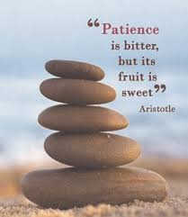

Patience is necessary for success. It is said that “all good things come to those who wait” If we wish to achieve anything of significance, we cannot expect to achieve it overnight.
Patience teaches us to value the effort and not just the success. It is a mistake to think that happiness can only be attained through certain achievements.
Patience takes time to learn if you aren’t born with it. You have to be able to trust and wait. Being patient brings peace of mind. When we expect certain outcomes, we have no peace in mind for we set the standards extremely high.
An example is simply going to see a movie and expecting it to be the best move you’ve ever seen . If you get frustrated also, nothing gets done expect your temper rises. And when you try to learn something, you need to stay patient as well because the same thing will happen to you and you will get no where.
patience is a wonderful tool of solving the problem in our life. patience means keep on walking towards your destination, there are two similar word patience and patient but both words meaning are very different patience means continuously do your work calmly and peacefully, and patient means a person who is not able to do anything .There is a little difference between patience and patient , a person who is working is the adverse condition slowly and peacefully that person has patience but a person who is looking only for good time he is called the patient .Our life is like a insurance policy ,in insurance policy we invest our money in the form of little amount and by the time we get much amount of money similarly in our life we do many work in a day like yoga ,learning etc. and by the time we get the benefit only because of patience ,so wear the patience in our personality and keep on focusing on your destination you will surely get your aim
Those who understand the importance of being patient try to stay calm and focused even in situations where waiting is not easy. Patience is an important life skill. Let’s see how patience is important in life:
1. Patience can transform your relationships
An impatient person is often restless, easily irritable, and might not hesitate in saying things that can hurt other people. Impatience clouds our reasoning and can make us behave rudely or inconsiderately. Consequently, an impatient person is likely to offend other people with his behavior.
Hence, if you care about your relationships, you must be patient and focus on the good qualities and individual traits of the people around you.
One way to learn the importance of patience in our life is to adopt an empathetic approach towards people. Empathy can help you understand other people and their circumstances so you don't feel impatient with them.
By knowing the importance of patience in life, you will be able to build and maintain strong relationships.
2. Patience transforms your potential
Quite often, people wrongly assume that wealth or high physical strength are the only measures of a successful life. However, more than one’s physical skills or material wealth, it is patience that guides people towards greatness in their respective fields.
Hellen Keller could neither hear nor see, but she achieved her desired goals by the virtue of patience. She knew that by patiently working towards her goals, she could fulfill her aspirations.
By learning the importance of patience, you can transform your lives too.
If you follow sports like soccer then you would know how important the extra players are. Those substitutes on the bench are perfect examples of patience. They know they are good enough to go out on the field and play well. Many times, a substitute thinks that they could have tackled a pass better than the players on the field.
Yet, the substitute doesn’t mind waiting in the wings and remains confident and focused. When he gets a chance to play, he welcomes the opportunity and plays a great game.
Substitutes are able to do this because they understand that patience is important.
Benefits of Patience
We can enjoy the following life-changing benefits by learning how to become patient:
1. Long-term vision
By understanding the importance of having patience we can maintain an unwavering focus on our long-term goals. Temporary setbacks like a delayed promotion, failing to qualify for a tournament or exam, or enduring train and flight delays don’t affect a patient person much.
2. Mental and physical well-being
We can see how patience plays an important role in our mental and physical wellness. By understanding the importance of patience in our life, we can learn to stay in control of our emotions and avoids negative feelings such as anger, frustration, helplessness, etc.
3. Ability to make a sustained effort
Patience gives people the perspective to focus on long-term strategies. You would have noticed that patient people have a reputation for persistence. This is because they work towards their goals despite setbacks and delays.
4. Peace and popularity
Patience enables us to analyze things and situations beyond their face value. The resourcefulness, calm, and empathetic behavior and self-control of patient people can make them very popular. It also gives them inner peace and the ability to keep smiling despite challenges.
It is almost impossible to exaggerate the importance of patience in life. Patience is sometimes called the mother of all virtues. Harappa Education’s Leading Self course is a great resource for those seeking growth in their personal and professional lives.
Explore blogs on topics such as patience vs self-control and how to develop patience in our Harappa Diaries section to continue on your path of self-development.
"To lose patience is to lose the battle."

Leave a comment